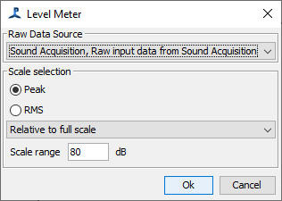
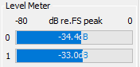

This module displays level meters for the audio signals in the side panel of the main PAMGuard GUI.
This can be useful in diagnosing that all input channels are active and that none are saturating.
From the File>Add modules>Displays menu, or from the pop-up menu on the data model display select "Level Meters". Enter a name for the new module and press Ok.
To configure the module, open the settings dialog from the Detection>"your module name" menu:
In the dialog select the sound source (generally the sound acquisition module, but you could connect to the output of some other process such as a filter or decimator).
You can also chose whether to display levels as peak, or RMS. Peak is better for diagnosing saturation problems.
It's also possible to select to display the data relative to full scale of the input device, in volts (input to the acquisition module) or in micropascals.
The level meters will show as a small display in the PAMGuard side panel.

You can adjust the position of the display in the side panel which can be done by changing the order of the modules from the File>Module Ordering menu command.